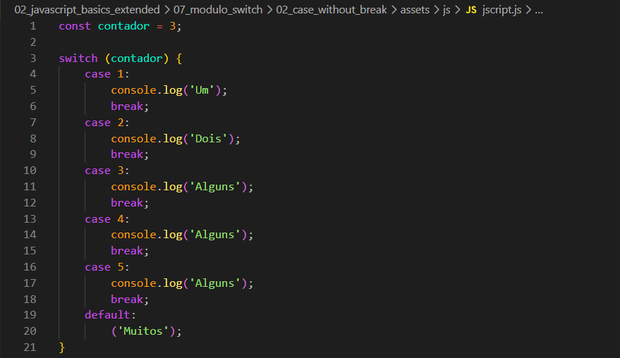
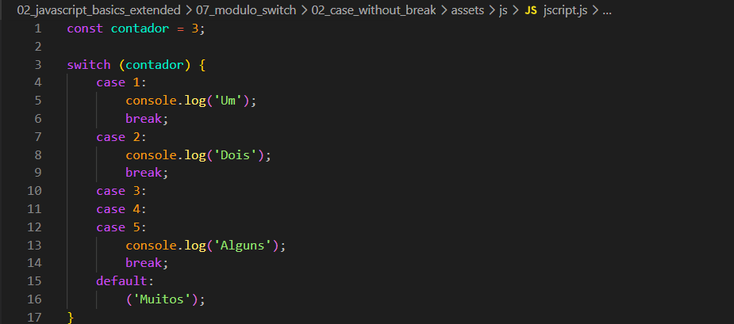

case without break
Intro
Iremos continuar aprendendo mais sobre switch.
Codigo de Exemplo:

Iremos continuar aprendendo mais sobre switch.

Como podemos ver em nosso codigo acima, quando temos um switch com valores parecidos como no caso que estamos usando temos como valor "Alguns", uma forma que podemos fazer e apagar os console valores repetidos e deixar apenas um com esse valor. Ficando da seguinte forma:
